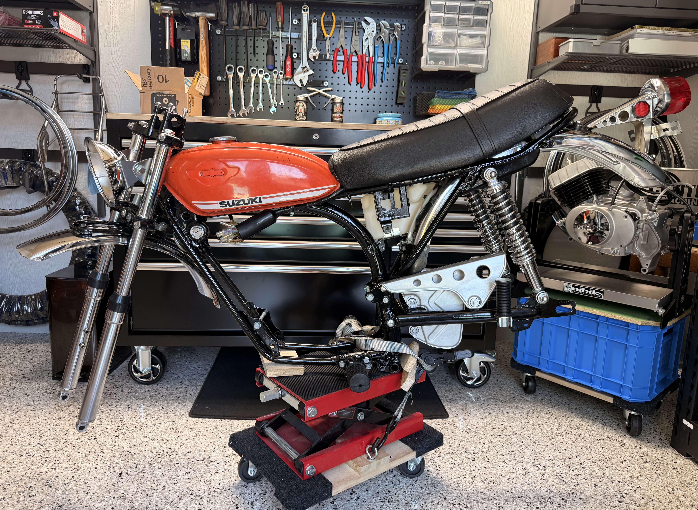
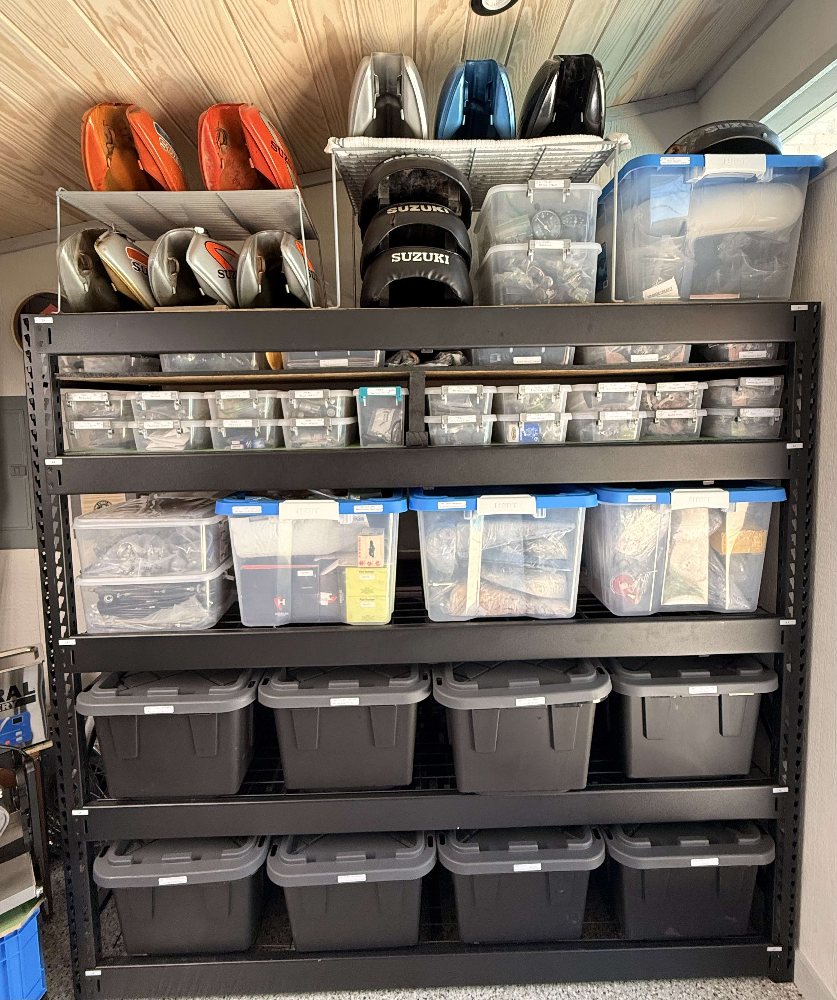

Two Stroke Works
Flower Mound, Texas
Two Stroke Works is rooted in a simple idea: bring classic Suzuki TS bikes back to life with care, patience, and mechanical honesty. From full restorations to parts refinishing, details matter.
Whether it is a clean ride, a period-correct rebuild, or a hard-to-find component, the goal is always the same — preserve the look, sound, and feel that made these bikes memorable in the first place.

A focused vintage Suzuki TS90 restoration built around clean factory lines, period-correct character, 80% NOS parts and the details that make these machines worth preserving.
From parts refinement to final presentation, the goal is simple: build a bike that feels honest, complete, and unmistakably Suzuki.
A small selection of parts and shop items chosen for vintage Suzuki TS restorations. Focused, useful, and aligned with the standards behind our builds.

Vintage-style chambers selected for period-correct TS builds and strong visual presence.

Carefully selected top-end parts suited for rebuilds that respect original character and fitment.

Body pieces chosen for clean lines, correct shape, and strong restoration potential.
Supporting exhaust pieces selected to complement vintage TS setups and preserve the right overall feel.
Finishing parts that help a build feel complete, honest, and visually correct.
Intake components selected for vintage TS applications where function and period feel both matter.
Suspension-related parts curated for clean chassis presentation and dependable vintage setup work.
The details that often make the difference between a rough build and a complete one.
The details that often make the difference between a rough build and a complete one.
The details that often make the difference between a rough build and a complete one.
Curated rolling chassis parts for builds where finish quality and visual correctness matter.
A small run of branded items for customers, collectors, and vintage Suzuki TS enthusiasts.


Based in Flower Mound, Texas. Reach out for restoration work, parts, or to talk through a vintage Suzuki TS build. We offer Vapor Honing, Powder Coating and Re-chroming parts restoration services as well.